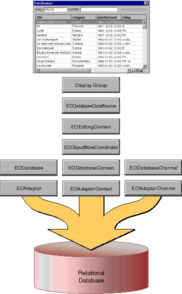

Table of Contents
Table of Contents  Next Section
Table of Contents
Next Section
Table of Contents  Previous Section
Previous Section

Figure 31. Typical Configuration of a Graphical User Interface Application
The following sections describe how the network of objects is created, starting with a nib or component.
Loading a User Interface
When you drag an entity from a model file into Interface Builder or WebObjects Builder, you create an entity display group-a display group that's connected to an EODatabaseDataSource. The builder application automatically creates a display group, an EODatabaseDataSource, and an EOEditingContext. These objects are archived in your nib file or WebObjects component directory. At run-time, your application unarchives these objects as their interface is loaded, as shown in Figure 32. As part of unarchiving a nib file or component, many other objects are brought into the network of behind-the-scenes objects.
Figure 32. Enterprise Objects Framework Objects in a Nib or Component
Unarchiving an Editing Context
During unarchiving, an EOEditingContext uses the EOEditingContext class method defaultParentObjectStore to determine its parent object store. Normally, it's the EOObjectStoreCoordinator returned from the EOObjectStoreCoordinator class method defaultCoordinator. If a coordinator has not yet been created, it is created at this time. Unarchiving a Database Data Source
Unarchiving an EODatabaseDataSource sets a more complex chain of events into motion: an EODatabaseContext and a host of associated objects are brought into the network of objects as follows:
The default model group is created the first time defaultGroup is invoked. Subsequent invocations return the same shared instance. It contains all the models for an application, as well as for any frameworks the application references. In the majority of applications, the default model group is sufficient. However, if your particular application requires different model grouping semantics, you can create your own EOModelGroup instance, add the appropriate models, and assign it to your application's EOObjectStoreCoordinator using the EOModelGroup method setModelGroup (or the EOObjectStoreCoordinator method setModelGroup: in Objective-C).
When an EODatabaseDataSource connects to an EODatabaseContext, the database context brings in additional supporting objects. A database context can't exist without an EODatabase and an EOAdaptorContext. Similarly, an EODatabase and an EOAdaptorContext can't exist without an EOAdaptor. Thus, as shown in Figure 33, connecting to a database context also connects an EODatabase, an EOAdaptor, and an EOAdaptorContext. Furthermore, if the adaptor bundle associated with the EODatabaseDataSource's model hasn't yet been loaded, it is loaded now.
Figure 33. Connecting an EODatabaseDataSource with an EODatabaseContext
Similarly, all editing contexts in an application share the same EOObjectStoreCoordinator by default.
If you want a different configuration, see the section "Editing Context Configurations". It describes how objects in different nibs can share the same editing context and how to set up nested editing context. The section "Object Store Coordinator Configurations" describes how you can set up multiple EOObjectStoreCoordinators.
Figure 34. Display Groups in the Same Nib Share an Editing Context
Figure 35. Display Groups in Different Nibs Have Separate Editing Contexts
Database Context Rendezvousing
To minimize the number of database connections an Enterprise Objects Framework application uses, an EODatabaseDataSource may share an existing EODatabaseContext with other data sources.
Figure 36. Data Sources Rendezvous With Compatible EODatabaseContexts
Setting Up Channels
The remaining objects in the network-an EODatabaseChannel and an EOAdaptorChannel-are created on demand when the application initiates a database interaction. For more information, see the section "Inside EODatabaseContext".
Table of Contents Next Section